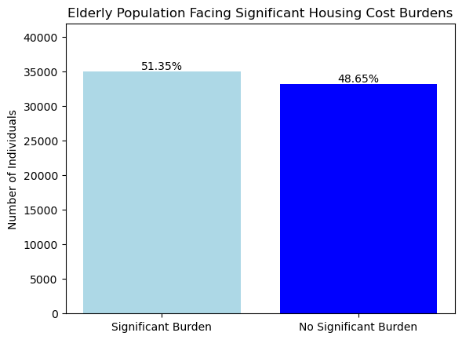
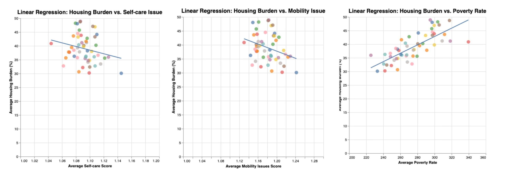
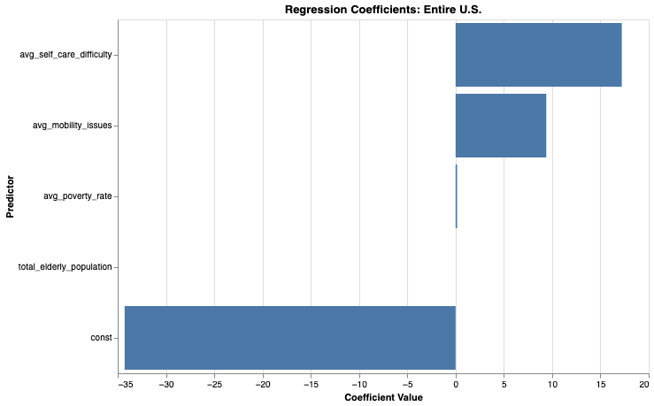
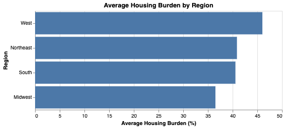
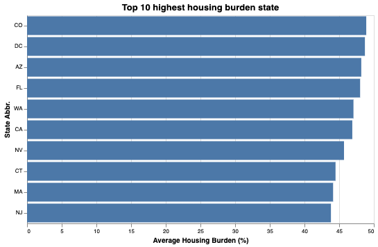
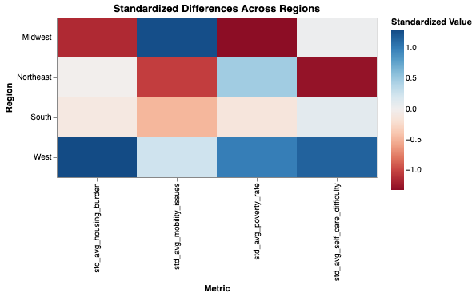
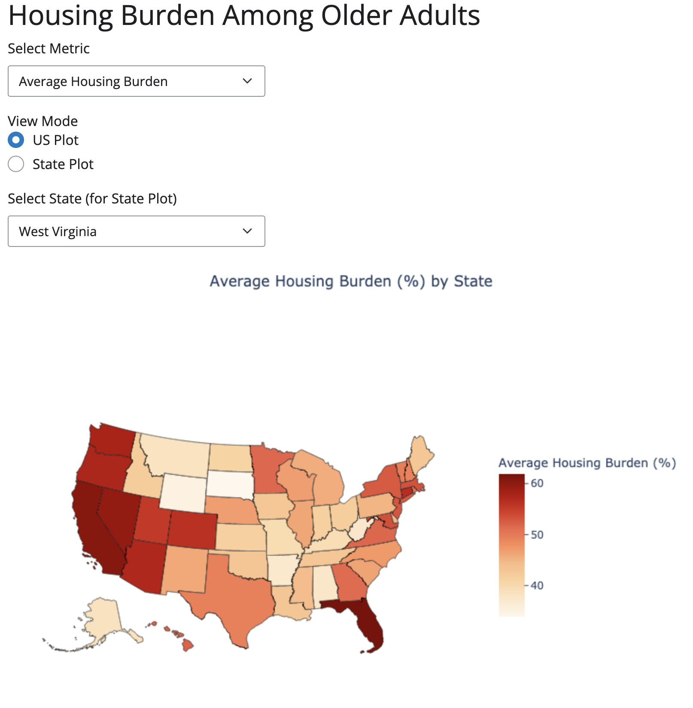
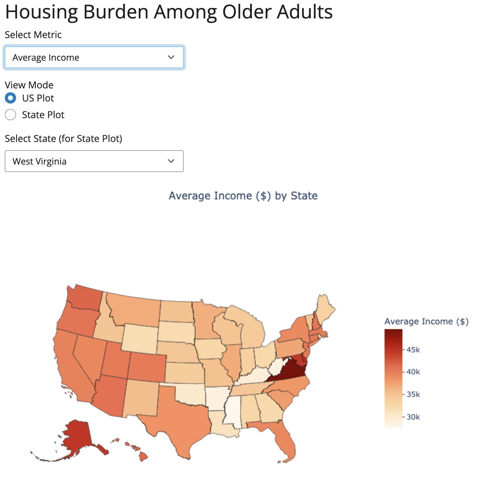
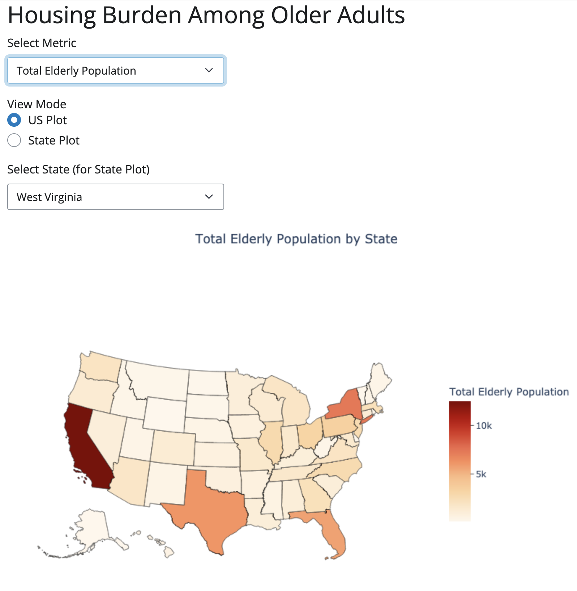

Final Project Writeup
Introduction: Housing burden occurs when a household spends more than 30% of its income on housing costs. In 2022, about one-third of older adult households in the U.S. were cost-burdened, and nearly 60% of older adult renters in Chicago faced this strain. This project investigates the factors contributing to housing cost burdens among older adults, examines geographic disparities, and explores potential policy interventions to address this growing challenge.
Research Question: This project addresses three questions: (1) Which economic and health-related factors are most strongly associated with elevated housing cost burdens for older adults (65+)? (2) Where are these burdens most pronounced across the U.S., and how do regional or state-level differences shape the issue? (3) How can these insights inform policy interventions to mitigate housing affordability challenges?
Methodology: We used three datasets for this project: the 2023 American ACS sample from IPUMS USA, focusing on variables such as STATEFIP (state FIPS codes), Age, INCTOT (total personal income), FAMSIZE (family size), RENTGRS (monthly gross rent), POVERTY (poverty status), DIFFMOB (mobility difficulty: 1-No; 2-Yes), and DIFFCARE (self-care difficulty: 1-No; 2-Yes); the State Abbreviations and FIPS Codes Dataset; and the 2023 TIGER/Line Shapefiles from the United States Census Bureau.
Data cleaning involved selecting relevant columns, replacing placeholder values with NaN, and removing rows with missing or invalid data. Individuals aged 65+ with incomes above $12,000 were retained to align with the $14,614 poverty line, focusing on those not in extreme poverty. Housing_Burden was calculated as annual housing costs divided by total income, expressed as a percentage. The dataset was then merged with the State Abbreviations and FIPS Codes Dataset to add state-level identifiers.
To assess the prevalence of housing burdens, individuals were categorized into two groups: those spending over 30% of their income on housing and those spending less. A bar chart created with Altair visualized these groups, providing clear proportions for interpretability. Linear regression analyses using statsmodels examined relationships between housing burden and predictors such as poverty rate, mobility difficulties, and self-care challenges, with scatter plots illustrating the strength and direction of these relationships. A multivariate regression model analyzed predictors of housing burden, including poverty rate, elderly population, mobility issues, and self-care difficulty. Coefficients were visualized with an Altair bar chart, highlighting each predictor’s significance and impact on housing burden nationally.
For geographic analysis, states were grouped into four regions using FIPS codes, and key metrics like average housing burden, poverty rate, and mobility issues were calculated. Altair bar charts compared regions and visualized the top 10 states with the highest burdens, though reliance on averages masked internal disparities. Regional comparisons were further standardized using z-scores and visualized with an Altair heatmap, though this assumed normal distribution, potentially impacting comparability.
An interactive Shiny app allowed users to explore metrics such as average housing burden and total elderly population. Choropleth maps styled with the AlbersUSA projection showcased national trends, while histogram views highlighted intra-state variability. Dynamic descriptive statistics added context, providing both broad overviews and detailed insights. A challenge was optimizing shapefiles to maintain smooth performance for this interactive tool.
Results:
Results 1: Core Housing Burden Trends:
 
Our findings reveal that more than half (51.35%) of older adults studied spend over 30% of their income on housing, underscoring a pervasive affordability crisis. Linear regression analyses show a clear, positive relationship between poverty and housing burden, while mobility and self-care difficulties individually exert weaker direct effects.

Notably, a multivariate regression model identifies self-care challenges as the strongest predictor, followed by mobility issues and poverty, suggesting the need for policies that integrate both financial and supportive health services.
Results 2: Geographic Variation and Top-10 Ranking:
 
Geographic variation further refines our understanding. The West and Northeast consistently exhibit higher average housing burdens and elevated poverty rates, indicating that local market conditions and economic constraints shape regional disparities. In contrast, the Midwest shows comparatively lower burdens, suggesting that fewer households exceed the critical 30% income threshold. Meanwhile, a top-10 ranking of states by housing burden, largely clustered in the West and Northeast, highlights the importance of local cost drivers and the potential benefits of targeted policy measures.
Result 3: Multi-Metric Standardization and Policy Implications:

A standardized, multi-metric heatmap analysis reveals that no single intervention is likely to suffice across all regions. Policies that expand affordable housing and rental assistance may prove most impactful in high-burden areas, while regions with moderate burdens but high poverty rates might prioritize anti-poverty initiatives and improved healthcare access. These differentiated insights underscore the complexity of housing affordability challenges and the necessity of regionally tailored strategies.
Result 4: Shiny Application:
  
The Shiny application translates these findings into an interactive tool. Users can toggle between national maps and state-specific histograms, exploring variations in housing burden, poverty, and income. This dual perspective supports both broad policy discussions and localized analysis. By offering a dynamic interface, the app empowers stakeholders to investigate factors influencing housing burdens and identify actionable solutions.
Policy Implications & Future Work: Addressing housing burdens for older adults requires multifaceted strategies, including financial interventions like rental subsidies and affordable housing alongside support for mobility and self-care challenges. Regional disparities suggest that tailored approaches, rather than one-size-fits-all solutions, are essential. Future research should include more granular geographic data, longitudinal analyses, and additional variables like healthcare access to inform more targeted interventions. A holistic approach integrating economic, health, and geographic factors is critical to crafting equitable and effective policies for improving the well-being of older Americans.